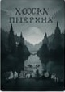
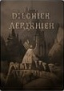
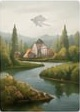
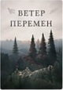

Сквозь туман
Анна ПетроваФэнтези, Приключения
Мир, где магия и туман переплетаются в вечной борьбе. История выбора, который меняет всё.
◉ 1 245 ♡ 199 · Обновлено: сегодня в 08:15
Фэнтези, Приключения
Мир, где магия и туман переплетаются в вечной борьбе. История выбора, который меняет всё.
◉ 1 245 ♡ 199 · Обновлено: сегодня в 08:15
Драма, Детектив
Прошлое не отпускает тех, кто пытается убежать от него. Интригующий детектив о тайнах семьи.
◉ 965 ♡ 142 · Обновлено: вчера в 21:30
Проза, Семейный
Тайны старого дома и тёплых дней, которые скрывает тихая река.
◉ 817 ♡ 131 · Обновлено: 10.04.2024
Рассказ, Драма
Хрупкая история о жизни, которая может измениться в один миг.
◉ 654 ♡ 96 · Обновлено: 05.04.2024